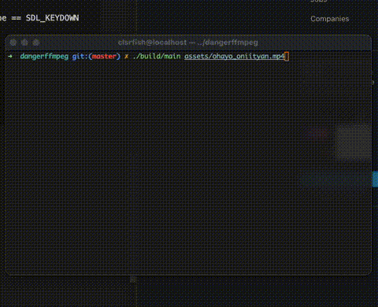

【DangerFFmpeg】第二节、输出到屏幕
本文是 《DangerFFmpeg》系列教程第二节，系列完整目录： 《开篇》 《第一节、屏幕截图》 《第二节、输出到屏幕》 《第三节、播放声音》 《第四节、多线程》 《第五节、视频同步》 《第六节、同步音频》 《第七节、快进快退》 《结语》
系列所有代码托管在 GitHub 。
同原文使用的 SDL 相比，SDL2 API 变更比较大，所以译文和原文会有一定差别。
SDL 和视频
为了绘制到屏幕上，我们将使用 SDL2 框架。SDL2 是 Simple Direct Layer2 的缩写，它是个非常棒的多媒体应用开发库，支持跨平台，并且在许多项目中都有使用。你可以从官网获取 SDL2 的源码或直接将其开发包安装到系统上。从本节开始，你需要添加 SDL2 依赖才能编译教程中的代码。
macOS 上推荐
brew install sdl2安装 SDL2。为了表达方便，如无特别说明，后文提到的 SDL 都表示 SDL2。
SDL 有许多绘制图片的方法，并且有一个适合显示视频 —— SDL_UpdateYUVTexture。YUV（准确地说是 YCbCr）是与 RGB 类似的图像存储格式。不准确地说，Y 代表 亮度（brightness or luma） 分量，U 和 V 就是 颜色（color） 分量。YUV 要比 RGB 更加复杂，为了实现各种优化（主要是体积），YUV 可能会丢弃一些颜色信息，比如两个 Y 分量共享一对 UV 分量。SDL 的 SDL_Texture 可以接收 YUV 的三个分量并绘制出来。SDL2 比 SDL 支持的 YUV 格式更多，本文使用性能较好的 YV12 格式。还有一种 YUV 格式，称作 YUV420P，与 YV12 类似，不同的是 U、V 分量的先后顺序相反。其中 420 表示的是图像的 YUV 分量是按照 4:2:0 的比例采样的，差不多是一个颜色分量被四个亮度分量所共享，即颜色分量只有原始数据的 1/4。这种采样方式的优点是可以节省带宽，因为人眼无法感知到这种变化。“P” 表示存储格式是 分层的（planar），即 Y、U 和 V 分开存储在不同的数组里。FFmpeg 可以将图像转换成 YUV420P 格式，另一个便利是，很多视频采用 YUV420P 格式存储，或者很容转换成 YUV420P。
所以我们现在的计划是替换第一节中的 SaveFrame，将**帧数据（frame）**输出到屏幕上。不过在开始之前我们需要先了解如何使用 SDL。首先，我们需要添加头文件并且初始化：
#include <SDL.h>
#include <SDL_thread.h>
// Initialize SDL
if (SDL_Init(SDL_INIT_VIDEO | SDL_INIT_AUDIO | SDL_INIT_TIMER) != 0) {
spdlog::error("Could not initialize SDL - {s}", SDL_GetError());
SDL_Quit();
return 1;
}
SDL_Init 的参数表明我们想要的使用什么功能，比如这里就是需要支持视频、音频以及时钟系统。SDL_GetError 可以方便地获取调试信息。
如何添加 SDL 到项目可以参考源码。
创建窗口
现在我们需创建一个窗口（SDL_Window）去渲染的内容，可以使用 SDL_CreateWindow 创建：
SDL_Window* win = SDL_CreateWindow("Tutorial 02: Outputting to the Screen", SDL_WINDOWPOS_CENTERED,
SDL_WINDOWPOS_CENTERED, 640, 480, SDL_WINDOW_SHOWN)
if (win == nullptr) {
spdlog::error("Could not create window - {s}", SDL_GetError());
SDL_Quit();
return 1;
}
SDL_CreateWindow 接受一个标题，窗口的位置，窗口的大小以及窗口的属性，如果返回值为 nullptr 则是窗口创建失败，直接退出程序。
创建 Renderer 和纹理
窗口已经显示出来了，看起来还比较简单。为了绘制帧数据，还需要创建 SDL_Renderer 和纹理（SDL_Texture），纹理其实是一块可以存放图像数据的内存，Renderer 则使用纹理中的数据进行绘制。在创建 Renderer 时还要关联窗口，因为 Renderer 需要知道绘制到哪里：
SDL_Renderer* ren = SDL_CreateRenderer(win, -1, SDL_RENDERER_ACCELERATED | SDL_RENDERER_PRESENTVSYNC);
if (ren == nullptr) {
SDL_DestroyWIndow(win);
SDL_Quit();
return 1;
}
第二个参数指定需要使用的图形驱动，传入 -1 表示使用第一个满足要求的驱动。第三个参数（flags）指明了我们的要求，比如这里要支持硬件加速和垂直同步。
Renderer 创建好后就可以创建纹理（SDL_Texture）了：
SDL_Texture* texture = SDL_CreateTexture(ren, SDL_PIXELFORMAT_YV12, SDL_TEXTUREACCESS_STREAMING, width, height);
SDL_CreateTexture 可以创建一个空白的纹理对象。它的第二个参数指定了接受的纹理格式，这传入文章开头说的 YV12 对应的常量。第三个参数则指定了我们希望图形驱动如何管理数据，它有三种形式：
SDL_TEXTUREACCESS_STATIC：数据上传之后很少更新。SDL_TEXTUREACCESS_STREAMING：更新非常频繁。SDL_TEXTUREACCESS_TARGET：作为渲染的输出目标，比如在后台绘制，但是不希望它显示在屏幕上，就可以用这种纹理暂时存储。
显然我们应该用 SDL_TEXTUREACCESS_STREAMING。
绘制画面
第一节中我们将原始帧数据转换成了 24-bit RGB 格式，这里需要改成 YUV420P，FFmpeg 没有直接提供 YV12 格式，我们可以在使用 YUV420P 时调换一下 UV 的位置。
AVFrame* pFrame420P = av_frame_alloc();
if (pFrame420P == nullptr) {
return 1;
}
// Determine required buffer size and allocate buffer
int nbBytes = avpicture_get_size(AV_PIX_FMT_YUV420P, pCodecCtx->width, pCodecCtx->height);
uint8_t* buffer = reinterpret_cast<uint8_t*>(av_malloc(nbBytes * sizeof(uint8_t)));
// initialize SWS context for software scaling
SwsContext* pSwsCtx = sws_getContext(pCodecCtx->width, pCodecCtx->height, pCodecCtx->pix_fmt, pCodecCtx->width,
pCodecCtx->height, AV_PIX_FMT_YUV420P, SWS_BILINEAR, nullptr, nullptr, nullptr);
现在我们可以将 pFrame420P 的数据上传到 testure 进行展示了：
// Clear the current rendering target
SDL_RenderClear(ren);
// Update texture
SDL_UpdateYUVTexture(texture, nullptr, pFrameYV12->data[0], pFrameYV12->linesize[0], pFrameYV12->data[1],
pFrameYV12->linesize[1], pFrameYV12->data[2], pFrameYV12->linesize[2]);
// Draw texture
SDL_RenderCopy(ren, texture, nullptr, nullptr);
// Update the screen
SDL_RenderPresent(ren);
// Take a quick break after all that hard work
SDL_Delay(50);
YUV420P 数据分层存储在 pFrame420P->data 中。pFrame420P->linesize 正如其命名一样，保存了 pFrame420P->data 每层数组的大小/长度，要注意这个长度包含了内存对齐添加的额外空间，这个数据和 SDL 的 “pitches” 是对应的。
SDL_RenderCopy 最后两个参数指定了显示区域和显示位置，因为这个不是我们的关注点，所以都传 nullptr，画面会填满整个窗口，感兴趣可以计算个准确的矩形区域。
每次渲染结束我们都暂停 50ms，避免画面变化过快，当然这里的 50ms 无法在真实项目中使用，后面我们将会看到如何动态调整延时以获得准确的播放帧率。
SDL event system
我们再看看 SDL 的另外一个功能：事件系统。SDL 配置了当你打字、在窗口内移动鼠标或向 SDL 发送信号时，SDL 会产生一个事件（event）。如果你想处理用户输入，你的程序可以检查这些事件。程序也可以构造事件发送给 SDL，这个在多线程编程时是个非常有用的能力，我们将在第四节中看到。回到我们的程序，我们在每次发送 packet 之前检查事件队列。在这里我们只处理 SDL_QUIT 和 SDLK_ESCAPE 按下的事件，以便主动的退出程序：
SDL_Event ev;
while (!hasError && !hasFinished) {
while (SDL_PollEvent(&ev)) {
if (ev.type == SDL_QUIT || (ev.type == SDL_KEYDOWN && ev.key.keysym.sym == SDLK_ESCAPE)) {
hasFinished = true;
}
}
if (hasFinished) {
continue;
}
// ...
}
开始播放
在修改完对应代码后，我们就可以编译运行了。
./main.sh assets/ohayo_oniityan.mp4

运行程序之后发现了什么？帧率和原视频不一致，因为我们写死了 20fps。我们现在还没有计算帧数据该什么时候展示的代码，后面（第五节里）我们会去处理视频同步的问题。但是首先，我们缺少了更重要的东西：声音！
这些就是本节教程的全部内容，源码已经上传 GitHub 。